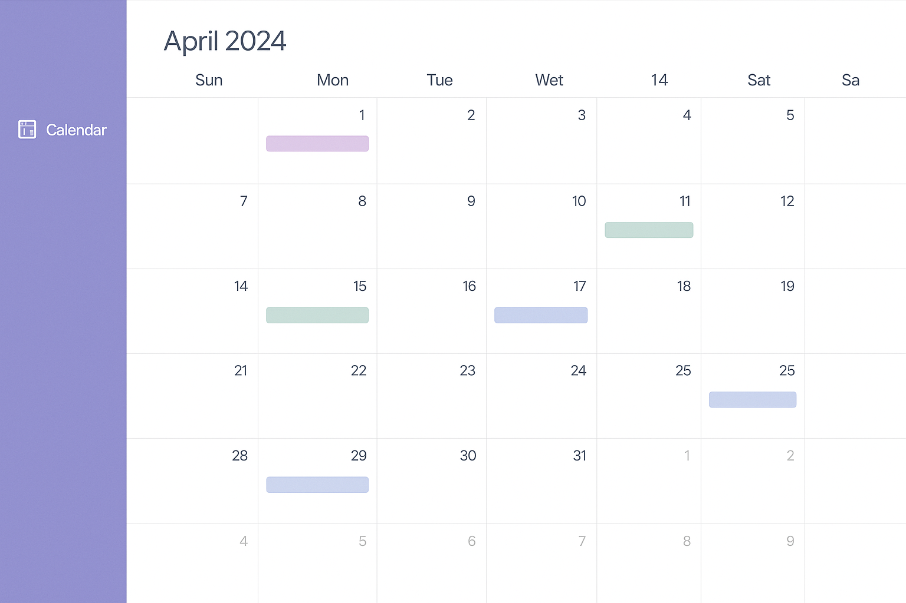

Lic. en Gestión de Tecnología de la Información: Planificación
Desde mi primer año sé que organizar mis tareas es fundamental para avanzar con constancia. Esta plataforma me permite llevar el control de mis actividades, priorizar lo importante y mantenerme enfocada en mis objetivos académicos día a día.

Materias 1° Cuatrimestre 2025
A continuación, comparto la información sobre las materias que estoy cursando este año.
En la tabla se detallan los nombres de las asignaturas, los días en que se dictan, los horarios correspondientes y el nombre de cada profesor o profesora a cargo.
Esta organización me permite llevar un mejor control de mi cursada y planificar mis actividades semanales.
| Materia | Día | Horario | Profesor/a |
|---|---|---|---|
| Arquitectura de Computadores | Lunes | 18:30 a 20:30 hrs | Leonardo Prieto |
| Sistemas de Información I | Martes | 18:30 a 20:30 hrs | Marcelo Tadey |
| Introducción a la Algoritmia | Miércoles | 18:30 a 20:30 hrs | Guillermo Maquieira |
| Marketing | Jueves | 18:30 a 20:30 hrs | Monica Comesaña |
| Diseño y Desarrollo WEB | Viernes | 18:30 a 20:30 hrs | Patricia Litovicius |